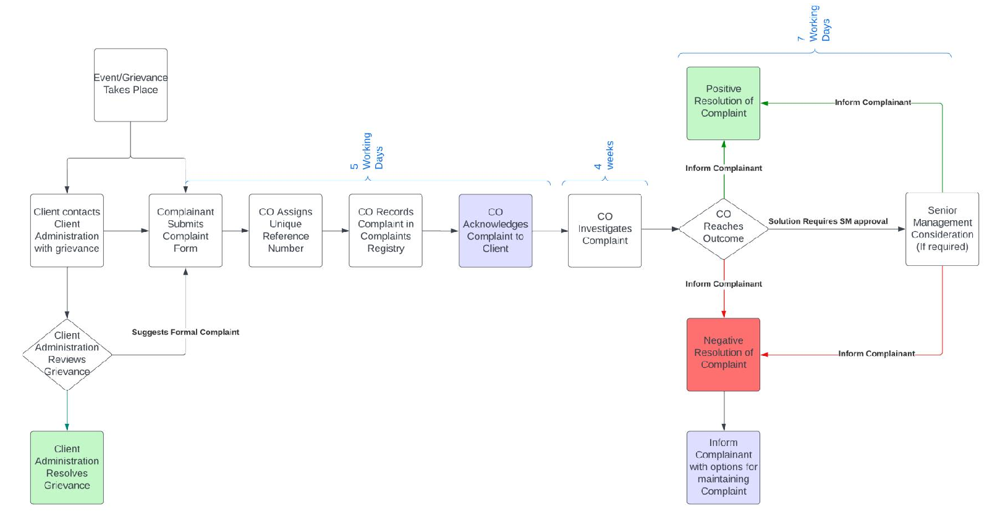

Introduction
Luna Wealth Asset Management Ltd (hereinafter “LWAM” or “the Company”), whose headquarters are at 4 Foti Pitta, Labs Tower, 9th floor, 1065 Nicosia, Cyprus, is a company incorporated and registered in the Republic of Cyprus under Cyprus Company Law and is authorized and regulated as a Cyprus Investment Firm (CIF) by the Cyprus Securities and Exchange Commission (hereinafter the “CySEC”), under License Number 379/19, in accordance with the Investment Services and Activities and Regulated Markets Law of 2017 (Law 87(I)/2007) (the “Law”), as amended from time to time, and subject to the European Parliament Markets in Financial Instrument Directive II (“MiFID II”).
The Company is dedicated to providing services to its clients’ in a fair and impartial manner. In case of a client complaint, the Company will endeavor to resolve the complaint without undue delay, taking into consideration the gravity of the complaint and the range of the attendant financial implications resulting therefrom both for the client and for the Company.
Legal Scope
In fulfilling its obligations under the Regulation 2017/575 Article 26 (hereinafter the “Regulation”) and as a CIF licensed by the CySEC and in accordance with Circular C338, the Company is required to establish, implement and maintain effective and transparent procedures for the reasonable and prompt handling of complaints received from clients and to keep a record of each complaint and the measures taken for its resolution.
The Policy has been prepared taking into account the CySEC’s Circular C338 and the European Securities and Markets Authority’s (hereinafter the “ESMA”) and the European Banking Authority’s (hereinafter the “EBA”) guidelines JC 2018 35 on complaints-handling for the securities and banking sectors (hereinafter the “Guidelines”).
Objective
The objective of this document is to set clear internal procedures as to the handling of client communications, identifying complaints and to ensure proper handling of complaints as per the Company’s values, the requirements of the Regulation, Guidelines and the applicable Circular.
General
The Company’s Complaints Handling Policy, as may be amended from time to time, is adopted by the Company’s Board of Directors. The Company hereby establishes effective and transparent procedures for the reasonable and prompt handling of complaints or grievances received from Clients or potential Clients (hereinafter the “Complainant”). The Company shall keep a record of each complaint and the measures taken for its resolution, as applicable. The Complaint Handling procedure and records-keeping are under the responsibility of the Compliance Department.
The Company’s Compliance Department ensures that all complaints are investigated and assessed immediately, thoroughly, fairly and objectively, taking into account all the relevant matters and including an assessment of the conduct of the relevant staff member involved in dealing with the client. The Company additionally looks at whether the conduct of the relevant staff member was in compliance with the Company’s values, internal rules and guidelines.
The Complaints Handling Policy forms part of the Company’s Terms and Conditions of Business. Therefore, by entering into an agreement with the Company, the Client also agrees to and accepts the Complaints Handling Policy as published on the Company’s website. Any terms that are not expressly defined herein shall have the meanings respectively attributed to them in the Company’s Terms and Conditions of Business, unless the context requires otherwise.
What is a “Complaint”?
A “Complaint” is defined in accordance with the Guidelines paragraph 11 as a statement of dissatisfaction addressed to a CIF by a Complainant relating to the provision of investment services under MiFID II. In order to lodge a complaint with the Company clients have to complete the Complaint Form (see Appendix 1) in the English Language and send it via e-mail to compliance@lunawealth.com. Any other statements, enquiries, requests and/or reports shall be responded to and handled by the Client Administration Department but shall not be considered as Complaints. The Client Administration Department will evaluate each client issue addressed to it and if appropriate suggest to the client that they can lodge an official complaint with the Company by completing the Complaint Form and sending it to compliance@lunawealth.com.
Information required from the Complainant
Every effort should be made to inform the Complainant that in order for their issue to be treated as an official Complaint and in the interest of resolving it as expediently as possible, they must fill in the Complaint Form fully, providing all requested information therein.
Where the Complaint is not made directly to the Compliance Department via the Complaint Form; then the Complaint will not be considered as an official complaint being processed via the Complaint Handling Policy of the Company. The Client must fill in the required form in full and send it to compliance@lunawealth.com via e-mail to initiate the Complaints Handling Policy. The following details are stated in the Complain Form document as provided by the Complainant:
a. the full name of the Complainant; b. the identification number (ID/Passport number) of the Complainant; c. the Client ID/Customer number if applicable; d. Complainant telephone number; e. Complainant e-mail; f. Complainant country of residence; g. the date of the events taking place; h. the date of submitting the Complaint; i. the type of financial instrument involved; j. the cause of complaint; k. the details of the complaint or grievance- full description; l. the disputed amount; m. the transaction number if applicable
General Overview of the Procedure
The procedure for handling Clients’ complaints established and implemented by the Company:
a. Is simple and clear; b. Ensures complaints are handled without undue delay and free of charge; c. Ensures that customers complaints are treated fairly, transparently and in an objective manner; d. To be effective and aids decision making; e. To take all the necessary steps to ensure fair outcomes f. Takes into account the seriousness of the complaint and the extent of economic impact arising from the content of the complaint, both for the Client and the Company.
The steps when a Complaint is filed by a Complainant through the abovementioned process (See Appendix 1 – Complaint Form that is available at https://lunawealth.com/legal-framework/) , are as follows:
- 1.Compliance Department receives the completed and signed Complaint Form (Appendix
- 1)at the compliance@lunawealth.com email.
- 2.The Compliance Officer handling the Complaint records it in the Complaints Registry and assigns it with a unique reference number as per the Complaints Cataloguing section of this Policy. a. In case of a conflict of interest on the part of the Company’s Compliance Officer handling the complaint, the Officer shall notify his/her supervisor immediately and another person will be assigned to the Complaint by the Company following the procedures mentioned hereafter.
- 3.The Compliance Officer must acknowledge the receipt of the Complaint (see Annex 1) to the Complainant as soon as possible and not later than 5 working days. The acknowledgement will include the unique reference number and brief information on the handling process and expected timeframes.
- 4.The Compliance Officer must gather and investigate all relevant evidence and information regarding the Complaint.
- 5.The Compliance Officer must provide a response (see Annex 2), in plain language, in a timely manner as detailed below, and record in the Complaints Registry the measures taken to resolve the Complaint/ a. In case of any delays in providing a response, the Compliance Officer informs the complainant, about the reasons of such delay and indicates the expected timeline for response (See Annex 3).
- 6.When providing a final decision that does not fully satisfy the Complainant’s demands, the Compliance Officer must notify in writing the Complainant of the Company’s position thoroughly on the Complaint and setting out the Complainant’s options to maintain the complaint (See Annex 4).
- 7.Notify CySEC of the complaint via form COMP-CIF (submitted electronically on a monthly basis) as per the Circular C338.
Any employees of the Company or third parties providing a service to the Company must notify aggrieved clients that in order to lodge an official complaint they must follow the aforementioned procedure.
Complaint Handling Flow

Complaint Cataloging
When a Complainant lodges a Complaint the following process is applied with respect to recording and registering the Complaint:
All Complaints are given due and immediate consideration. The Complaint is lodged in the Complaints Register as soon as it is received and a record of all related correspondence, is created by the Compliance Department. Each Complaint is given a unique reference number consisting of fourteen (14) digits. The first six (6) digits are the code given to the CIF for the Transaction Reporting System (cif379), the following four (4) digits indicate the year, and the last four (4) digits denote the serial number of the complaint (i.e – CIF37920230001). Measures taken to resolve the complaints and the outcome of the procedure are also lodged in the internal Complaints Register.
The Complaints Register is maintained within the Company’s server at W:\Shared With Me\7_Compliance_CY\CySEC\Complaints. The Compliance Department shall maintain all lodged and resolved complaints for a minimum period of five (5) years after the termination of the business relationship with the Client. All evidence collected by the Compliance Department and correspondence (both internal and with the Complainant) is also kept within the Complaint file/record.
Each complaint entry must as a minimum record: a. Unique 10-digit reference number. b. Complainant identity and contact details (name, ID/passport where applicable, email, country). c. Date/time complaint received and receipt channel. d. Name and department of receiving staff / recipient. e. Short description of complaint and product(s)/service(s) involved. f. Financial amount claimed (if any) and estimated loss. g. Priority/severity rating. h. Actions taken and dates (investigation steps, interim communications). i. Outcome / remedy offered and acceptance status. j. Date of final response. k. Date complaint closed. l. Reference to any onward escalation (CySEC / Ombudsman / court). m. Documents/evidence index. n. Retention expiry date
The Compliance Department solely has access and is charged with keeping the Complaints Register updated. The Complaints Register includes all Complaints and exists only for internal use. The purpose of the register is to consolidate all complaints in a single registry and ensure that all complaints are treated expediently and fairly.
Complaint Acknowledgement
Receipt of the complaint will be acknowledged to the Complainant in writing within a maximum of five (5) working days of being received (see Annex 1). The written acknowledgement should include the unique reference number, state that the complaint is under investigation and will include details as to the name and capacity of the person who will investigate the complaint. The Complainant will also be informed that the unique reference number should be used for all communications with the Company, the Financial Ombudsman and the CySEC regarding this issue. Furthermore, the written acknowledgement shall state that upon completion of the investigation the complainant will be informed in writing of the outcome of the investigation and provide details regarding the Complaint Handling procedure.
Complaint Investigation and Outcome
The Compliance Department shall thoroughly examine complaints received using information contained within but not limited to the Company’s books, trading records, emails and call records and any other source of information deemed relevant in resolving the Complaint. The following information must also be gathered and recorded:
a. The identification particulars of the Complainant; b. The service provided by the Company to the Complainant; c. The employee responsible for the provision of those services; d. Department where the employee belongs; e. Date of receipt and registration of the Complaint; f. Content of the Complaint; g. Capital and value of the financial instruments which belong to the Client; h. Any correspondence between the Company and the Client relevant to the Complaint; i. Any correspondence between the Compliance Officer and other departments/third-parties relevant to the Complaint; j. The date and the content of any response of the Company to the said complaint; k. Any other information or evidence that is relevant to the complaint.
Every effort will be made to conclude the investigation and respond to the complaint within four
- (4)weeks of the acknowledgement of the complaint.
If no definitive solution has been made possible within this period, a letter will be sent to the Complainant before the expiry of the four (4) weeks of the receipt of the complaint outlining the investigation’s progress, explaining why a resolution has not yet been possible and indicating when further contact will be made (Annex 3).
If the Company requires more information from the complainant, a written response to such effect will be sent to the complainant and the four weeks period will recommence after the client’s response is received by the Company.
Within seven (7) working days of completion of an investigation a report must be sent to the complainant (see Annex 2), explaining clearly:
a. Complaint reference number and summary of the issues; b. The outcome of the investigation; c. The nature and terms of any offer of settlement which the Company is prepared to make in satisfaction of the complaint;
d. Clear information on how to accept any offer; e. The reasons for declining to offer a settlement; f. The complainant’s rights to escalate to CySEC and/or to alternative dispute resolution (Financial Ombudsman), with contact details; g. A statement that the Company will treat the complaint as settled if the Complainant does not indicate dissatisfaction within four (4) weeks of receiving the report.
All complaints should be resolved within eight (8) weeks of receipt of the complaint. However, if a resolution is impossible within this timeframe, a letter will be sent to the complainant eight (8) weeks after the receipt of the formal complaint setting out the procedure envisaged to be followed thereafter. In accordance with the CySEC’s Circular C338, the whole complaint resolution procedure cannot exceed three (3) months from the submission of the complaint.
Unsatisfactory Outcome
If the Complainant is not satisfied with the outcome of the Complaint (Negative Resolution of Complaint), the Compliance Department will communicate with the Complainant and try to find a solution to the dispute. If a solution is found, the Compliance Department shall prepare a letter to the Complaint stating the agreed terms of the solution and treat the Complaint as having a positive resolution.
In cases where no solution is found or the Complainant did not receive an answer within three
- (3)months from the submission of the Complaint, the Compliance Department will inform the Complainant of other available options to maintain the Complaint (see Annex 4).
These options are as follows:
i. submitting a complaint to the CySEC; and/or ii. submitting a complaint to the Financial Ombudsman; and/or iii. initiate an Alternative Dispute Resolution(ADR) mechanism; and/or iv. lodge a case at the relevant courts of the Republic of Cyprus.
Note: The Company shall cooperate with the Cyprus Securities and Exchange Commission (CySEC) in case it carries out its own investigation in relation to a Client’s complaint.
Record-Keeping
As aforementioned, the signed Complaint Form, all evidence, information and communication regarding the Complaint will be kept by the Compliance Department within the Complaint Record located on the Company’s server at W:\Shared With Me\7_Compliance_CY\CySEC\Complaints.
In case the Complainant is a Client of the Company (not potential client) all the communications between the Client and the Company regarding the complaint will be uploaded into the Company’s CRM software system (Moebius) by the Compliance Department and filed in the Clients folder on the Company’s server at W:\Shared With Me\3_Middle_Back Office_CY\2_Middle Office\CLIENTS as well once the Complaints Handling procedure has been completed.
Reporting of Complaints to the CySEC
As per the requirements of Circular C338, the Compliance Department will prepare on a monthly basis and not later than the 5th day of the month the form COMP-CIF (hereinafter the “Form”).
The Form needs to be digitally signed using the digital signature disclosed to the CySEC and submitted via the TRS system by uploading into the folder called ‘Incoming’. The technical information, to login to the TRS is the following:
Server IP address: 212.31.100.75 Server Type: SFTP using SSH
The login and password details were provided to the Company during the Company’s initial authorisation process.
The CySEC will issue, within two days, a feedback file after processing the submission of the Form that can be downloaded via the TRS system through the folder called ‘Outgoing’.
The submitted form, feedback files and proof of submission evidence will be kept within the Company’s server at W:\Shared With Me\7_Compliance_CY\CySEC\Complaints and a physical/paper record will also be kept at the Compliance Department.
Review of the Complaints Handling Procedure
The Company’s Complaints Handling Policy shall be reviewed periodically, at least annually, in order to:
- Monitor the effectiveness of the procedures against the annual Complaint’s Report and to improve the procedures that seem to have been ineffective;
- Refine processes in the Procedures where necessary;
- Ensure compliance with applicable legislation and any changes to these.
Appendix 1
Annex 1 – Letter of Acknowledgement
[DD/MM/YYYY]
[Recipients Name] [Position, Organisation/Company] [Address]
To whom it may concern/Dear Mr/Mrs [Insert Name],
RE: RECEIPT OF COMPLAINT NO. CIF3792020XXXX
Firstly, thank you very much for contacting us with your complaint. We want to assure you that
your business is very important to us and that we will make the outmost to resolve this issue as
soon as possible.
Kindly be informed that the matter is under investigation by the Compliance Department. Your
complaint is being investigated by Mr/Mrs [Insert Name], one of our most capable Compliance
Officers, and you can contact him/her at compliance@lunawealth.com. Please remember to
quote the unique reference number, found above in bold, in any future communication in
relation to this complaint with us, CySEC and the Financial Ombudsman (if applicable).
Upon completion of the investigation you will be informed, in writing, of the outcome of the investigation. We shall respond to your complaint within a maximum of four (4) weeks.
We apologise for any inconvenience this issue may have caused you.
Should we require any additional information we will be in touch. In such an eventuality the
investigation will be completed within a maximum of four (4) weeks from the date that such
additional information is provided.
Please do not hesitate to contact us for anything further.
Kind Regards,
[Compliance Officer Name]
Compliance Department
Annex 2 – Letter of Investigation Outcome
[DD/MM/YYYY]
[Recipients Name] [Position, Organisation/Company] [Address]
To whom it may concern/Dear Mr/Mrs [Insert Name],
RE: OUTCOME OF COMPLAINT NO. CIF3792020XXXX INVESTIGATION
We are glad to inform you that the investigation regarding your complaint, numbered
CIF3792020XXXX, has been completed.
Having looked into the issue you raised, we have concluded that [insert outcome].
In light of these findings we are prepared to offer you [insert terms of settlement].
In light of these findings we are not prepared to [offer you a settlement/refund/return capital
etc] due to the fact that [insert reasons].
Please be advised that the complaint will be treated as settled if we do not hear from you within
four weeks of receiving this report.
Please do not hesitate to contact us for anything further.
Kind Regards,
[Compliance Officer Name] Compliance Department
Annex 3 – Letter of Delay
[DD/MM/YYYY]
[Recipients Name] [Position, Organisation/Company] [Address]
To whom it may concern/Dear Mr/Mrs [Insert Name],
RE: COMPLAINT NO. CIF3792020XXXX INVESTIGATION
We are in the unfortunate position to inform you that the investigation of this matter will not be
concluded within the timeline specified in our previous communication, dated [insert date].
Despite our best efforts to conclude this investigation on time, we were unable to do so due to
[insert reasons for delay].
So far, our investigation has indicated that [insert outline of investigation’s progress].
You can expect us to contract you with an outcome on this investigation within a maximum of
four (4) weeks as of today. We completely understand any frustration you might feel as a result
of this delay and we assure you we will do the outmost to resolve this complaint expediently.
We apologize for any inconvenience this delay may cause you.
Please do not hesitate to contact us for anything further.
Kind Regards,
[Compliance Officer Name]
Compliance Department
Annex 4 – Details of Relevant Authorities for Maintaining Complaint
[DD/MM/YYYY]
[Recipients Name] [Position, Organisation/Company] [Address]
To whom it may concern/Dear Mr/Mrs [Insert Name],
RE: COMPLAINT NO. CIF3792020XXXX
We would like to thank you for bringing this matter to our attention. We are terribly sorry to hear
that you are not satisfied with the outcome of our investigation in relation to your complaint and
we apologise for any inconvenience this may have caused to you.
On our part we will review this issue once more to identify any points we can improve and avoid
similar issues arising in the future.
In the meantime, please be informed that you may maintain your complaint by contacting
directly one of the following institutions and quoting the unique reference number provided to
you by us:
Financial Ombudsman:
Address: 15 Kypranoros Street, 1061 Nicosia
Phone: +357 22848900 (main number)
Fax: +357 22660584, +357 22660118
E-mail: complaints@financialombudsman.gov.cy
CySEC:
Address: 19 Diagorou Street, 1097 Nicosia
Phone: +357 22506600
Fax: +357 22506700
E-mail: info@cysec.gov.cy
Alternative Methods of Dispute Resolution
Relevant Courts of the Republic of Cyprus
Please do not hesitate to contact us for anything further.
Kind Regards,
Compliance Department